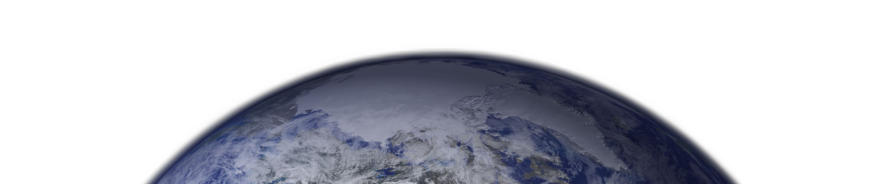
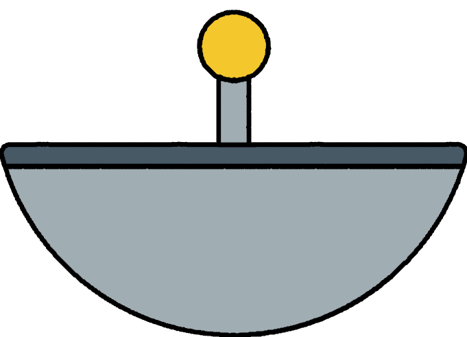

Звуки, которые мы слышим в этом ролике, на самом деле являются гравитационными волнами, которые образовались после столкновения двух черных дыр. Затем эти волны были преобразованы в звуковые. Кодовое название: "Столкновение черных дыр".

Эти помехи были зафиксированы прибором Cassini Radio and Plasms Wave Science, когда аппарат пересекал плоскость колец Сатурна. Кодовое название: "Пересечение колец Сатурна".

Звук в этом ролике показывает мощное взаимодействие плазменных волн, движущихся от Сатурна к его луне Энцеладу. Кодовое название: "Звуки Сатурна".
Аудиоклип был зафиксирован космическим аппаратом НАСА "Юнона", когда тот пересек границу огромного магнитного поля Юпитера и попал в ударную волну. Ударная волна возникает, когда магнитосфера астрофизического объекта (в данном случае Юпитера) взаимодействует с близлежащей текучей окружающей плазмой, такой как солнечный ветер. Это похоже на звуковой удар. Кодовое название: "Рык Юпитера".

Аудиоклип был снят аппаратом НАСА InSight 6 апреля 2019 года. Звук подчеркивает, насколько сейсмически шумной может быть марсианская поверхность. Кодовое название: "Марсотрясение".
Тщательный анализ данных, полученных с зонда НАСА Parker Solar Probe в 2021 году, показал, что электромагнитные "Волны-Свистуны", названные так потому, что первые радисты принимали эти жуткие, нисходящие звуки за свист человека, неожиданно отсутствуют в некоторых областях верхней атмосферы Солнца. Это открытие может привести к лучшему пониманию физики солнечного ветра, а значит, и к более точным прогнозам космической погоды и того, как она может повлиять на нас здесь, на Земле. Кодовое название: "Волны-Свистуны"


